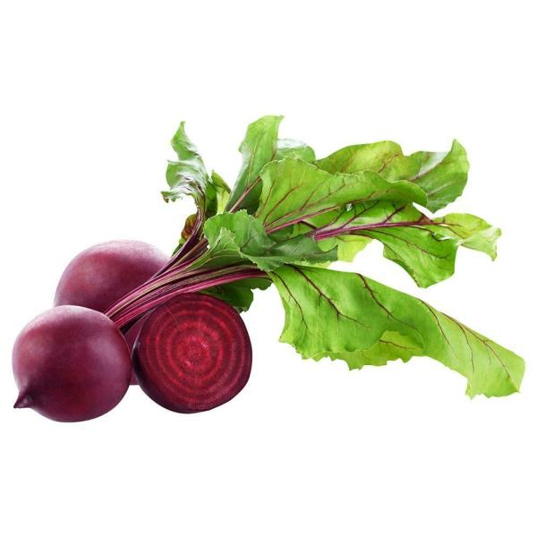
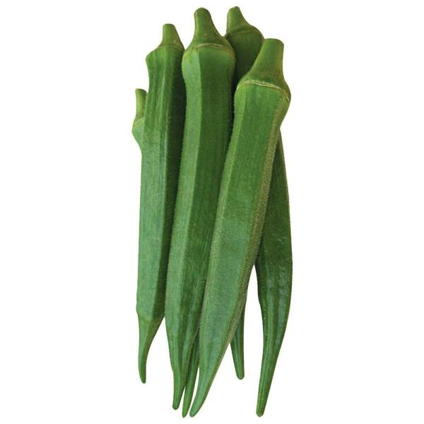

Select Categery
amala-greenss Rs50/kg
beetroot- Rs 40/kg
bhendi-ra Rs 30/kg
brinjal Rs 50/kg

carrot- Rs 60/kg

cauliflower Rs 40/kg
cluster-beans Rs 40/kg
cocnut Rs 40/kg
cucumber Rs 30/kg
cucumber Rs30 /kg
curry-leav Rs 60/kg
french-beans Rs 40/kg

green-capsicum Rs 30/kg

bottle-goud Rs 30/kg
onion Rs 60/kg

potato Rs 40/kg
sweet corn Rs 60/kg
tomato Rs 40/kg
bitter-gourd Rs 50/kg
local-beans Rs 30/kg
radish- Rs 40/kg
snake-goud Rs 50/kg
raw-papaya Rs 60/kg
turmeric-fresh Rs 40/kg
Vegetable farming
Vegetable production operations range from small patches of crops, producing a few vegetables for family use or marketing, to the great, highly organized and mechanized farms common in the most technologically advanced countries.
Home gardening provides vegetables exclusively for family use. About one-fourth of an acre (one-tenth of a hectare) of land is required to supply a family of six. The most suitable vegetables are those producing a large yield per unit of area. Bean, cabbage, carrot, leek, lettuce, onion, parsley, pea, pepper, radish, spinach, and tomato are desirable home garden crops.
Processed vegetables include canned, frozen, dehydrated, and pickled products. The cost of production per unit area of land and per ton is usually less for processing crops than for the same crops grown for market because raw material appearance is not a major quality factor in processing. This difference allows lower land value, less hand labour, and lower handling cost. Although many kinds of vegetables can be processed, there are marked varietal differences within each species in adaptability to a given method.
This type of vegetable farming requires special skills and techniques. The crop is not ready for harvest when the edible portion of the plant reaches the stage of maturity; it must be carried through further stages of growth. Production under isolated conditions ensures the purity of seed yield. Special techniques are applied during the stage of flowering and seed development and also in harvesting and threshing the seeds.